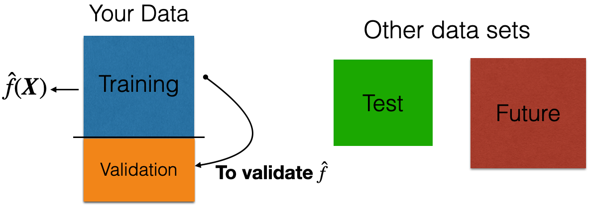
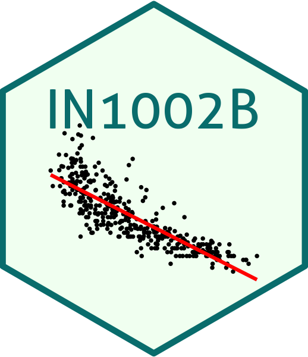

Data preprocessing: Part I
IN1002B: Introduction to Data Science Projects
Department of Industrial Engineering
Agenda
- Introduction
- Training, validation, and test datasets
- Dealing with missing values
- Transforming predictors
- Standarization
- Dimension reduction
Introduction
Data preprocessing
Data pre-processing techniques generally refer to the addition, deletion, or transformation of data.
It can make or break a model’s predictive ability.
For example, linear regression models (to be discussed later) are relatively insensitive to the characteristics of the predictor data, but advanced methods like K-nearest neighbors, principal component regression, and LASSO are not.
We will review some common strategies for processing predictors from the data, without considering how they might be related to the response.
In particular, we will review:
- Dealing with missing values.
- Transforming predictors.
- Reducing the number of predictors.
- Standardizing the units of the predictors.
scikit-learn library
- scikit-learn is a robust and popular library for machine learning in Python
- It provides simple, efficient tools for data mining and data analysis
- It is built on top of libraries such as NumPy, SciPy, and Matplotlib
- https://scikit-learn.org/stable/

Let’s import scikit-learn into Python together with the other relevant libraries.
We will not use all the functions from the scikit-learn library. Instead, we will use specific functions from the sub-libraries preprocessing, feature_selection, model_selection and impute.
Training, validation, and test datasets
Recall that …
In data science, we assume that
\[Y = f(\boldsymbol{X}) + \epsilon\]
where \(f(\boldsymbol{X})\) represents the true relationship between \(\boldsymbol{X} = (X_1, X_2, \ldots, X_p)\) and \(Y\).
- \(f(\boldsymbol{X})\) is unknown and very complex!
Two datasets
The application of data science models needs two data sets:
Training data is data that we use to train or construct the estimated function \(\hat{f}(\boldsymbol{X})\).
Test data is data that we use to evaluate the predictive performance of \(\hat{f}(\boldsymbol{X})\) only.

A random sample of \(n\) observations.
Use it to construct \(\hat{f}(\boldsymbol{X})\).
Another random sample of \(n_t\) observations, which is independent of the training data.
Use it to evaluate \(\hat{f}(\boldsymbol{X})\).
Validation Dataset
In many practical situations, a test dataset is not available. To overcome this issue, we use a validation dataset.
Idea: Apply model to your validation dataset to mimic what will happen when you apply it to test dataset.
Example 1
The “BostonHousing.xlsx” contains data collected by the US Bureau of the Census concerning housing in the area of Boston, Massachusetts. The dataset includes data on 506 census housing tracts in the Boston area in 1970s.
The goal is to predict the median house price in new tracts based on information such as crime rate, pollution, and number of rooms.
The response is the median value of owner-occupied homes in $1000s, contained in the column MEDV.
The predictors
CRIM: per capita crime rate by town.ZN: proportion of residential land zoned for lots over 25,000 sq.ft.INDUS: proportion of non-retail business acres per town.CHAS: Charles River dummy variable (= 1 if tract bounds river; 0 otherwise).NOX: nitrogen oxides concentration (parts per 10 million).RM: average number of rooms per dwelling.AGE: proportion of owner-occupied units built prior to 1940.DIS: weighted mean of distances to five Boston employment centersRAD: index of accessibility to radial highways.TAX: full-value property-tax rate per $10,000.PTRATIO: pupil-teacher ratio by town.LSTAT: lower status of the population (percent).
Read the dataset
We read the dataset and set the variable CHAS as categorical.
# Load Excel file (make sure the file is in your Colab)
Boston_data = pd.read_excel('BostonHousing.xlsx')
# Drop the categorical variable.
Boston_data['CHAS'] = pd.Categorical(Boston_data['CHAS'])
# Preview the dataset.
Boston_data.head(3)| CRIM | ZN | INDUS | CHAS | NOX | RM | AGE | DIS | RAD | TAX | PTRATIO | LSTAT | MEDV | |
|---|---|---|---|---|---|---|---|---|---|---|---|---|---|
| 0 | 0.00632 | 18.0 | 2.31 | 0 | 0.538 | 6.575 | 65.2 | 4.0900 | 1 | 296 | 15.3 | 4.98 | 24.0 |
| 1 | 0.02731 | 0.0 | 7.07 | 0 | 0.469 | 6.421 | 78.9 | 4.9671 | 2 | 242 | 17.8 | 9.14 | 21.6 |
| 2 | 0.02729 | 0.0 | 7.07 | 0 | 0.469 | 7.185 | 61.1 | 4.9671 | 2 | 242 | 17.8 | 4.03 | 34.7 |
How do we generate validation data?
We split the current dataset into a training and a validation dataset. To this end, we use the function train_test_split() from scikit-learn.
The parameter test_size sets the portion of the dataset that will go to the validation set.
The function makes a clever partition of the data using the empirical distribution of the response.
Technically, it splits the data so that the distribution of the response under the training and validation sets is similar.
Usually, the proportion of the dataset that goes to the validation set is 20% or 30%.
The predictors and response in the training dataset are in the objects X_train and Y_train, respectively. We can compile these objects into a single dataset using the function .concat from pandas.
# Split the dataset into training and validation.
training_dataset = pd.concat([X_train, Y_train])
training_dataset.head(4)| CRIM | ZN | INDUS | CHAS | NOX | RM | AGE | DIS | RAD | TAX | PTRATIO | LSTAT | MEDV | |
|---|---|---|---|---|---|---|---|---|---|---|---|---|---|
| 483 | 2.81838 | 0.0 | 18.10 | 0 | 0.532 | 5.762 | 40.3 | 4.0983 | 24.0 | 666.0 | 20.2 | 10.42 | NaN |
| 392 | 11.57790 | 0.0 | 18.10 | 0 | 0.700 | 5.036 | 97.0 | 1.7700 | 24.0 | 666.0 | 20.2 | 25.68 | NaN |
| 150 | 1.65660 | 0.0 | 19.58 | 0 | 0.871 | 6.122 | 97.3 | 1.6180 | 5.0 | 403.0 | 14.7 | 14.10 | NaN |
| 344 | 0.03049 | 55.0 | 3.78 | 0 | 0.484 | 6.874 | 28.1 | 6.4654 | 5.0 | 370.0 | 17.6 | 4.61 | NaN |
Equivalently, the predictors and response in the validation dataset are in the objects X_valid and Y_valid, respectively.
# Split the dataset into training and validation.
validation_dataset = pd.concat([X_valid, Y_valid])
validation_dataset.head(4)| CRIM | ZN | INDUS | CHAS | NOX | RM | AGE | DIS | RAD | TAX | PTRATIO | LSTAT | MEDV | |
|---|---|---|---|---|---|---|---|---|---|---|---|---|---|
| 26 | 0.67191 | 0.0 | 8.14 | 0 | 0.538 | 5.813 | 90.3 | 4.6820 | 4.0 | 307.0 | 21.0 | 14.81 | NaN |
| 275 | 0.09604 | 40.0 | 6.41 | 0 | 0.447 | 6.854 | 42.8 | 4.2673 | 4.0 | 254.0 | 17.6 | 2.98 | NaN |
| 251 | 0.21409 | 22.0 | 5.86 | 0 | 0.431 | 6.438 | 8.9 | 7.3967 | 7.0 | 330.0 | 19.1 | 3.59 | NaN |
| 37 | 0.08014 | 0.0 | 5.96 | 0 | 0.499 | 5.850 | 41.5 | 3.9342 | 5.0 | 279.0 | 19.2 | 8.77 | NaN |
Work on your training dataset
After we have partitioned the data, we work on the training data to develop our predictive pipeline.
The pipeline has two main steps:
- Data preprocessing.
- Model development.
We will now discuss preprocessing techniques applied to the training dataset. Note that all the techniques applied to this dataset will also be applied to the validation dataset and test dataset to prepare it for your model.
Dealing with missing values
Missing values
In many cases, some predictors have no values for a given observation. It is important to understand why the values are missing.
There four main types of missing data:
Structurally missing data is data that is missing for a logical reason or because it should not exist.
Missing completely at random assumes that the fact that the data is missing is unrelated to the other information in the data.
Missing at random assumes that we can predict the value that is missing based on the other available data.
Missing not at random assumes that there is a mechanism that generates the missing values, which may include observed and unobserved predictors.
For large data sets, removal of observations based on missing values is not a problem, assuming that the type of missing data is completely at random.
In a smaller data sets, there is a high price in removing observations. To overcome this issue, we can use methods of imputation, which try to estimate the missing values of a predictor variable using the other predictors’ values.
Here, we will introduce three simple methods for imputing missing values in categorical and numerical variables.
Example 2
Let’s use the penguins dataset available in the file penguins.xlsx.
# Load the Excel file into a pandas DataFrame.
penguins_data = pd.read_excel("penguins.xlsx")
# Set categorical variables.
penguins_data['sex'] = pd.Categorical(penguins_data['sex'])
penguins_data['species'] = pd.Categorical(penguins_data['species'])
penguins_data['island'] = pd.Categorical(penguins_data['island'])The dataset has some missing values denoted as NaN.
| species | island | bill_length_mm | bill_depth_mm | flipper_length_mm | body_mass_g | sex | year | |
|---|---|---|---|---|---|---|---|---|
| 0 | Adelie | Torgersen | 39.1 | 18.7 | 181.0 | 3750.0 | male | 2007 |
| 1 | Adelie | Torgersen | 39.5 | 17.4 | 186.0 | 3800.0 | female | 2007 |
| 2 | Adelie | Torgersen | 40.3 | 18.0 | 195.0 | 3250.0 | female | 2007 |
| 3 | Adelie | Torgersen | NaN | NaN | NaN | NaN | NaN | 2007 |
| 4 | Adelie | Torgersen | 36.7 | 19.3 | 193.0 | 3450.0 | female | 2007 |
One way to know what variables have missing data is using the function info() from pandas.
<class 'pandas.core.frame.DataFrame'>
RangeIndex: 344 entries, 0 to 343
Data columns (total 8 columns):
# Column Non-Null Count Dtype
--- ------ -------------- -----
0 species 344 non-null category
1 island 344 non-null category
2 bill_length_mm 342 non-null float64
3 bill_depth_mm 342 non-null float64
4 flipper_length_mm 342 non-null float64
5 body_mass_g 342 non-null float64
6 sex 333 non-null category
7 year 344 non-null int64
dtypes: category(3), float64(4), int64(1)
memory usage: 14.9 KBIn the output of the function “non-null” refers to the number of entries in a column that have actual values. That is, the number of entries where there are not NaN.
<class 'pandas.core.frame.DataFrame'>
RangeIndex: 344 entries, 0 to 343
Data columns (total 8 columns):
# Column Non-Null Count Dtype
--- ------ -------------- -----
0 species 344 non-null category
1 island 344 non-null category
2 bill_length_mm 342 non-null float64
3 bill_depth_mm 342 non-null float64
4 flipper_length_mm 342 non-null float64
5 body_mass_g 342 non-null float64
6 sex 333 non-null category
7 year 344 non-null int64
dtypes: category(3), float64(4), int64(1)
memory usage: 14.9 KBThe value next to “RangeIndex” is the number of observations in the dataset.
Alternatively, we can use the function isnull() together with sum() to determine the number of missing values for each column in the dataset.
Removing missing values
If we want to remove all rows in the dataset that have at least one missing value, we use the function dropna().
| species | island | bill_length_mm | bill_depth_mm | flipper_length_mm | body_mass_g | sex | year | |
|---|---|---|---|---|---|---|---|---|
| 0 | Adelie | Torgersen | 39.1 | 18.7 | 181.0 | 3750.0 | male | 2007 |
| 1 | Adelie | Torgersen | 39.5 | 17.4 | 186.0 | 3800.0 | female | 2007 |
| 2 | Adelie | Torgersen | 40.3 | 18.0 | 195.0 | 3250.0 | female | 2007 |
| 4 | Adelie | Torgersen | 36.7 | 19.3 | 193.0 | 3450.0 | female | 2007 |
| 5 | Adelie | Torgersen | 39.3 | 20.6 | 190.0 | 3650.0 | male | 2007 |
Imputation using the mean
We can impute the missing values of a numeric variable using the mean or median of its available values. For example, consider the variable bill_length_mm that has missing values.
0 39.1
1 39.5
2 40.3
3 NaN
4 36.7
Name: bill_length_mm, dtype: float64In scikit-learn, we use the function SimpleImputer() to define the method of imputation of missing values.
Using SimpleImputer(), we set the method to imput missing values using the mean. We also use the function fit_transform() to apply the imputation method to the variable.
After imputation, the dataset looks like this.
| species | island | bill_length_mm | bill_depth_mm | flipper_length_mm | body_mass_g | sex | year | |
|---|---|---|---|---|---|---|---|---|
| 0 | Adelie | Torgersen | 39.10000 | 18.7 | 181.0 | 3750.0 | male | 2007 |
| 1 | Adelie | Torgersen | 39.50000 | 17.4 | 186.0 | 3800.0 | female | 2007 |
| 2 | Adelie | Torgersen | 40.30000 | 18.0 | 195.0 | 3250.0 | female | 2007 |
| 3 | Adelie | Torgersen | 43.92193 | NaN | NaN | NaN | NaN | 2007 |
| 4 | Adelie | Torgersen | 36.70000 | 19.3 | 193.0 | 3450.0 | female | 2007 |
Now, bill_length_mm has complete values.
To imput the missing values using the median, we simply set this method in SimpleImputer(). For example, let’s imput the missing values of bill_depth_mm.
# Imputation for numerical variables (using the mean)
num_imputer = SimpleImputer(strategy = 'median')
# Replace the original variable with new version.
penguins_data['bill_depth_mm'] = num_imputer.fit_transform(penguins_data[ ['bill_depth_mm'] ] )
# Show the first 4 rows of the updated dataset.
penguins_data.head(3)| species | island | bill_length_mm | bill_depth_mm | flipper_length_mm | body_mass_g | sex | year | |
|---|---|---|---|---|---|---|---|---|
| 0 | Adelie | Torgersen | 39.1 | 18.7 | 181.0 | 3750.0 | male | 2007 |
| 1 | Adelie | Torgersen | 39.5 | 17.4 | 186.0 | 3800.0 | female | 2007 |
| 2 | Adelie | Torgersen | 40.3 | 18.0 | 195.0 | 3250.0 | female | 2007 |
Using the mean or the median?
We use the sample mean when the data distribution is roughly symmetrical.
Pros: Simple and easy to implement.
Cons: Sensitive to outliers; may not be accurate for skewed distributions
We use the sample median when the data is skewed (e.g., incomes, prices).
Pros: Less sensitive to outliers; robust for skewed distributions.
Cons: May reduce variability in the data.
Imputation method for a categorical variable
If a categorical variable has missing values, we can use the most frequent of the available values to replace the missing values. To this end, we use similar commands as before.
For example, let’s imput the missing values of sex using this strategy.

Tecnologico de Monterrey